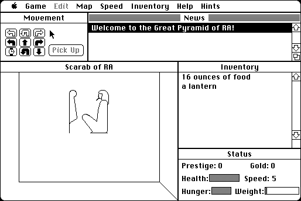

Download
Scarab14.zip (94K) Scarab of RA repackaged into a zipped hfs disk image and checksum file. The disk image can be mounted with Mini vMac.
Scarab14.sea.hqx (147K) Scarab of RA in the original format.
copyright: Rick Holzgrafe
mod date: Sep 17, 1992
license: shareware
official url :
Scarab of RA
"Graphic adventure game", featuring "three-dimensional, point-of-view graphics". For "System 6.0 or later".

If you find these downloads useful, please consider helping the Gryphel Project, which hosts them.
Here are the md5 checksums for the downloads, signed with Gryphel Key 5:
--------- GRY SIGNED TEXT --------- e0f8f8b66b9a1862d4c086b52cc68fde Scarab14.zip 7b3583fdf4ef39c745951873ec713046 Scarab14.sea.hqx ------- BEGIN GRY SIGNATURE ------- Gry/4Xa8CFcUzxdN/NndI3yCfdwuPLTjs8mh5vyrM/vMTVnQy8LIBQuPo09stpun zWUsV5rtUy+Hq9JQ1q1Wx3T0UFJAGGLbXAtlJ1t5/JMpGtajLubmBbkik7LeA7R7 6Fjs0xy+O1tvEXb58rkjsSuN2xXEqUZUaArcTiYt4niFyPxtn6tbP5bKC+4tf6gV -------- END GRY SIGNATURE --------